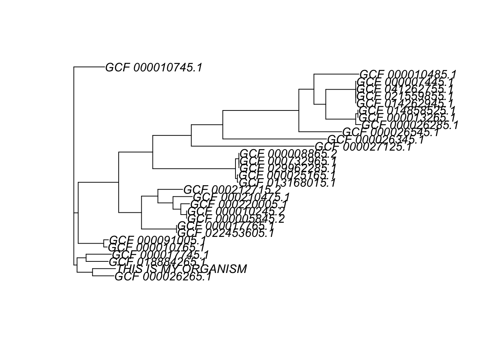

Chapter 3 phylo objects in R
3.1 Structure
The standard phylogeny object in R is the phylo object popularized by the ape package. The phylo class Its used by most R packages which deal with phylogenies. Thanks to that there are many functions to create a phylo object from a Newick format file:
ape::read.tree("example_eco_model.nwk") %>% class
phyloseq::read_tree("example_eco_model.nwk") %>% class
phytools::read.newick("example_eco_model.nwk") %>% class
treeio::read.newick("example_eco_model.nwk"") %>% classA phylo object describes a phylogeny with the following data:
## [1] "phylo"## [1] "edge" "edge.length" "Nnode" "node.label" "tip.label"tip.label shows the names or ids of the species, genomes or strains whose evolutionary history we are studying (names of the leaves or tips):
## [1] "GCF_000026265.1" "GCF_000010385.1" "GCF_018884265.1" "GCF_000017745.1"
## [5] "GCF_000010765.1" "GCF_000091005.1"node.label has the labels of the internal nodes. In many cases, these tags are the bootstrap support values.
[!NOTE] When we: 1) Create phylogeny from a sequence alignment with RaxML and b) calculate bootstraps for the phylogeny we obtain a final tree with bootstrap support values added as internal node labels.
## [1] "" "0.981998" "0.574257" "0.960396" "0.996464" "1.000000"Phylo contains an edges matrix of ancestor — > descendant connections. Here the numbers are IDs of the internal and tip nodes.
- Column 1: Ancestral nodes (closer to the root)
- Column 2: Descendant nodes.
- The leaves are numbered from 1 to the total number of leaves.
- The internal node ids go after the leave ids.
## [,1] [,2]
## [1,] 31 32
## [2,] 32 33
## [3,] 33 1
## [4,] 33 2
## [5,] 32 34
## [6,] 34 3You can obtain the label for a given node ID like this
## [1] 2edge.length holds the lengths of the edges of the edge matrix.
[!NOTE] When we create phylogeny from a sequence alignment with RaxML, branch lengths are genetic distances, defined as the expected number of nucleotide or amino acid substitutions per site.
## [1] 0.000884 0.004205 0.005838 0.006266 0.002459 0.0060203.2 Basic manipulation
Some phylo object transformations can be easyly done with R base. For example:
To change a tip label:
tree1<-tree0
tip_id<-which(tree1$tip.label=="GCF_000010385.1")
tree1$tip.label[tip_id]="THIS IS MY ORGANISM"
plot(tree1)
But there are many packages that are very useful to perform phylo object calculations and transformations, such as:
Here are examples of frequent manipulations
3.3 Biological annotations
A phylo object is excellent to store a phylogeny structure but it was not designed to store the characteristics of the studied organisms. As we need this data to make sense of the phylogeny we store it in tables elsewhere.
Here is a list of some frequently used annotations with emphasis in bacteria:
- Taxonomy: Species or clade within a species (ej. B2 in E. coli)
- Isolate/strain name
- Sequence type: an specific combination of marker gene alleles. (e. g. In E. coli: adk, fumC, gyrB, purA, recA, icd and mdh)
- Geography: Country, state
- Host type: Human, pig, cow, tomato, others.
- Group within a study: this study, outgroup, model strain, others.
To work with the corresponding annotations wee need to charge the metadata ane make its ids follow the same order as tip.labels of the phylo tree
- Charge
## # A tibble: 6 × 4
## Assembly.Accession Strain Patotype Phylogroup
## <chr> <chr> <chr> <chr>
## 1 GCF_000007445.1 CFT073 UPEC B2
## 2 GCF_000010385.1 SE11 Comensal B1
## 3 GCF_000010485.1 SE15 Comensal B2
## 4 GCF_000010745.1 12009 EHEC B1
## 5 GCF_000010765.1 11128 EHEC B1
## 6 GCF_000013265.1 UTI89 UPEC B2- Reorder
library(dplyr)
tree_eco<-read.tree("data/example_eco_model.nwk")
metadata <- metadata %>%
filter(Assembly.Accession %in% tree_eco$tip.label) %>%
arrange(match(Assembly.Accession, tree_eco$tip.label))We will now show two easy ways to work with these metadata now, but the corresponding tools will be covered in more detail in later chapters.
###Add metadata to ggtree objects
ggtree objects are a kind of ggplot object designed to represent phylogenies. Here we construct a ggtree object from a phylo object and add the metadata to it.
After we add the metadata we can use it to customize the plot aesthetics.
library(ggtree)
p<-ggtree(tree_eco)
p<-p %<+% metadata
p<-p + geom_tiplab(aes( label=Strain)) +
geom_tippoint(aes(color = Phylogroup), size = 3)
p
3.3.1 phylo to tidytree
tidytree objects are phylogenetic tree data structures transformed into a “tidy” format. They are S4 objects with a rigid encapsulation and building. Fortunately, tibble functions make the coversion from a phylo to a tidytree object straightforward.
## [1] "tbl_tree" "tbl_df" "tbl" "data.frame"## # A tibble: 6 × 4
## parent node branch.length label
## <int> <int> <dbl> <chr>
## 1 33 1 0.00584 GCF_000026265.1
## 2 33 2 0.00627 GCF_000010385.1
## 3 34 3 0.00602 GCF_018884265.1
## 4 34 4 0.00687 GCF_000017745.1
## 5 36 5 0.00096 GCF_000010765.1
## 6 36 6 0.00129 GCF_000091005.1We can now join the two table like objects
treetib_w_data<-left_join(treetib,metadata,
by = c("label"="Assembly.Accession"))
head(treetib_w_data)## # A tibble: 6 × 7
## parent node branch.length label Strain Patotype Phylogroup
## <int> <int> <dbl> <chr> <chr> <chr> <chr>
## 1 33 1 0.00584 GCF_000026265.1 IAI1 Comensal B1
## 2 33 2 0.00627 GCF_000010385.1 SE11 Comensal B1
## 3 34 3 0.00602 GCF_018884265.1 B7A ETEC <NA>
## 4 34 4 0.00687 GCF_000017745.1 E24377A ETEC B1
## 5 36 5 0.00096 GCF_000010765.1 11128 EHEC B1
## 6 36 6 0.00129 GCF_000091005.1 11368 EHEC B1With these object you can explore and manipulate the phylogeny data, we will go back to this later on.